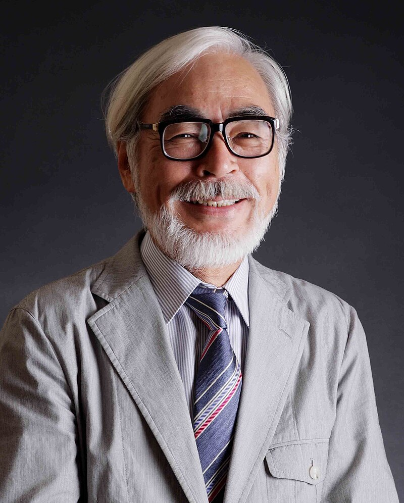

Краткая биография
Хаяо Миядзаки — один из самых известных японских аниматоров, режиссеров, сценаристов и художников, чьи работы были признаны мировыми шедеврами. Родился 5 января 1941 года в Токио. Он является одним из основателей студии Studio Ghibli, которая создала такие культовые фильмы, как «Мой сосед Тоторо» (1988), «Принцесса Мононоке» (1997) и «Унесённые призраками» (2001), которые оказали огромное влияние на анимационную индустрию.
С раннего возраста Миядзаки проявлял интерес к рисованию и анимации. После окончания университета он начал свою карьеру в индустрии анимации, устроившись на работу в Toei Animation, где зарекомендовал себя как талантливый художник. С течением времени он стал независимым режиссёром и автором, создавая фильмы, которые привлекли внимание зрителей по всему миру и получили признание за свои глубокие и философские сюжеты.
Студия Ghibli
Студия Studio Ghibli была основана в 1985 году японскими аниматорами Хаяо Миядзаки и Иссао Такахатой. С тех пор она стала одной из самых известных анимационных студий в мире. Ghibli знаменита своими уникальными произведениями, которые объединяют магию, природу и человечность. Многие фильмы студии исследуют важные темы, такие как экология, война, любовь и внутренний мир человека.
Её дебютный фильм, Наусикая из Долины ветров (1984), уже предвестил стиль студии — сложные персонажи, богатая природа и философские подтексты. Однако настоящая слава пришла с релизом Мой сосед Тоторо (1988) и Принцесса Мононоке (1997), которые вывели студию на международный уровень.
Особенность мультфильмов Ghibli заключается в их глубоком подходе к созданию мира и персонажей. В фильмах студии всегда много деталей, которые позволяют зрителям погрузиться в уникальные вселенные, где часто сочетаются элементы фэнтези и реализма. Также для студии характерна особая техника анимации, с акцентом на ручную работу и внимание к мелким деталям.
Студия также получила признание за то, как её фильмы затрагивают важные социальные и культурные темы. Например, Принцесса Мононоке освещает вопросы экологии и баланса между природой и технологическим прогрессом, а Унесённые призраками затрагивает тему взросления, потери и самоопределения.
На сегодняшний день Studio Ghibli продолжает радовать зрителей своими произведениями, сохраняя высочайшие стандарты качества анимации и сюжетной глубины. Фильмы студии признаны классикой мирового кинематографа и остаются популярными у зрителей всех возрастов по всему миру.
Награды и признание

Миядзаки получил множество наград, включая премию «Оскар» за лучший анимационный фильм за «Унесенные призраками» в 2003 году. Он также является лауреатом премий «Золотой медведь» на Берлинском кинофестивале и множества других наград за свою работу в кино и анимации.
Его фильмы не только принесли признание критиков, но и завоевали сердца миллионов зрителей по всему миру. Миядзаки считается мастером анимации и одним из величайших режиссеров в истории кино.